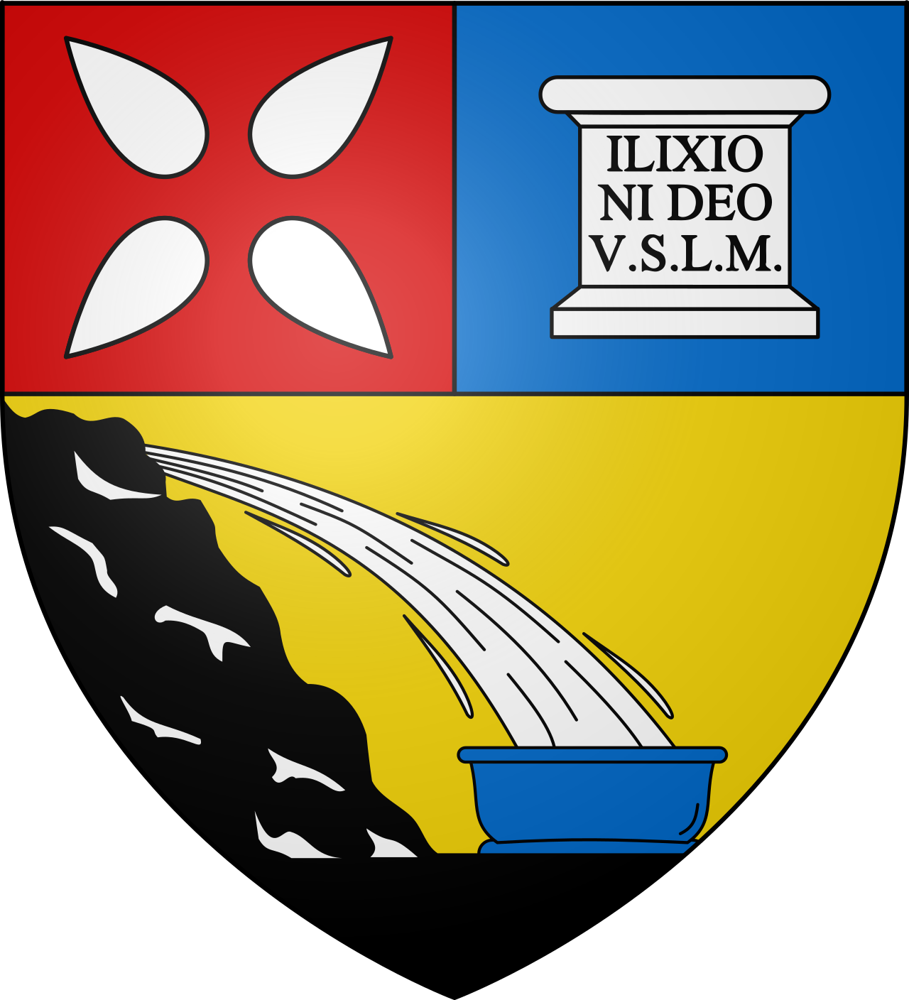
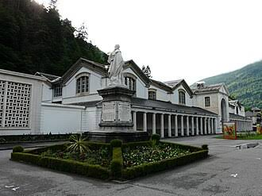

Bagnères-de-Luchon
La Reine des Pyrénées


⟹ Thermes · Montagne · Belle Époque ⟸

Avant Luchon : une vallée de sources chaudes. Bien avant la station, la haute vallée de la Pique est un carrefour pastoral occupé depuis le Néolithique. Les sources sulfurées qui jaillissent au pied de la montagne de Superbagnères sont vénérées par les populations pyrénéennes : plusieurs autels votifs dédiés au dieu Ilixon, divinité des eaux, ont été retrouvés sur place et ont donné son nom à Luchon.
L'époque romaine : les premiers thermes. Après la fondation de Lugdunum Convenarum (Saint-Bertrand-de-Comminges) par Pompée vers 72 av. J.-C., les Romains aménagent les sources. Des piscines revêtues de marbre, des conduites et des ex-voto découverts lors des travaux des XVIIIe et XIXe siècles attestent un établissement thermal fréquenté par les élites de la cité des Convènes.

Le Moyen Âge : une bourgade de passage. Intégrée au comté de Comminges, Bagnères — « les bains » — devient un modeste bourg montagnard vivant de l'élevage, des foires et du passage vers l'Aragon par le port de Vénasque. L'Hospice de France, au fond de la vallée, accueille dès cette époque voyageurs, marchands et pèlerins franchissant la chaîne.
1759 : le baron d'Étigny invente la station. Intendant de la généralité d'Auch, Antoine Mégret d'Étigny entreprend de relancer les eaux de Luchon. Il fait ouvrir une route carrossable depuis Montréjeau, réorganise les bains et trace la grande allée plantée de tilleuls qui porte aujourd'hui son nom. Les travaux, imposés aux habitants par corvées, suscitent d'abord leur résistance, mais ils transforment durablement la ville.
Le maréchal de Richelieu et la mode des eaux. Dans les années 1760, la venue du maréchal-duc de Richelieu, gouverneur de Guyenne, lance la réputation mondaine de Luchon. Aristocrates, puis bourgeois fortunés, viennent y soigner rhumatismes, affections respiratoires et maladies de peau.
Le XIXe siècle : l'âge d'or thermal. Au milieu du siècle, l'architecte Edmond Chambert édifie le grand établissement thermal néoclassique qui domine encore le haut des allées. On y creuse le vaporarium, un hammam naturel unique en Europe, aménagé dans des galeries souterraines où circulent les vapeurs des sources chaudes. Hôtels, villas, kiosque, parc et casino (1878-1880) donnent à la ville son visage Belle Époque.
Le chemin de fer et la « Reine des Pyrénées ». L'arrivée du train depuis Montréjeau en 1873 met Luchon à quelques heures de Toulouse et de Paris. Têtes couronnées, écrivains, artistes et hommes politiques s'y succèdent : la ville gagne alors son surnom de « Reine des Pyrénées ».
Superbagnères : la montagne à portée de main. En 1912, un chemin de fer à crémaillère hisse les visiteurs jusqu'au plateau de Superbagnères (1 800 m), où s'ouvre en 1922 un Grand Hôtel monumental. Le site devient l'un des berceaux du ski pyrénéen. La crémaillère ferme en 1966 ; une télécabine relie aujourd'hui la ville à la station.
Luchon aujourd'hui. Station thermale et de montagne, Luchon s'appuie sur ses thermes, son patrimoine Belle Époque, ses randonnées (lac d'Oô, vallée du Lys, port de Vénasque) et ses grands rendez-vous festifs. Fermée en 2014, la ligne ferroviaire Montréjeau–Luchon a été rouverte le 22 juin 2025 grâce à un financement de la Région Occitanie.
Luchon est née de ses eaux : les dieux pyrénéens les ont sacralisées, les Romains les ont domestiquées, et la Belle Époque en a fait la Reine des Pyrénées.
Repère synthétique — L'Âme des RégionsPour aller plus loin — sources et documentation :
• Thermes de Luchon — vaporarium et soins thermaux
• Pyrénées 31 — tourisme en Comminges et Pyrénées haut-garonnaises
• SNCF liO Occitanie — réouverture de la ligne Montréjeau–Luchon
• Archives départementales de la Haute-Garonne
• Plateforme POP (ministère de la Culture) — monuments historiques
• Wikipédia — Bagnères-de-Luchon
• INSEE — Bagnères-de-Luchon
Le baron d'Étigny (1719-1767), fondateur de la station moderne, est honoré par une statue au bas des allées qui portent son nom. Edmond Rostand (1868-1918) passa de nombreux étés de jeunesse à Luchon, où il écrivit ses premiers vers ; Lamartine, Victor Hugo et Alexandre Dumas comptent parmi les visiteurs illustres du XIXe siècle.
La fête des fleurs, née à la Belle Époque, fait défiler chaque dernier week-end d'août des chars fleuris dans les allées. Les Brandons de la Saint-Jean, grands troncs embrasés le 23 juin, appartiennent aux fêtes du feu du solstice d'été des Pyrénées inscrites au patrimoine culturel immatériel de l'UNESCO en 2015. La ville accueille aussi le Festival des créations télévisuelles de Luchon.
Accès : Luchon est desservie par le train depuis Montréjeau (ligne rouverte en 2025, correspondances vers Toulouse) et par la route via la vallée de la Garonne puis de la Pique. Le col de Peyresourde relie la ville au Louron et aux Hautes-Pyrénées.
Office de tourisme : L'office de tourisme de Luchon, sur les allées d'Étigny, propose visites guidées, randonnées, informations sur les thermes et la station de Superbagnères.
Conseil de visite : alternez la ville thermale (allées, thermes, villas) et la haute montagne : la vallée du Lys, l'Hospice de France et le lac d'Oô sont à moins de 30 minutes.